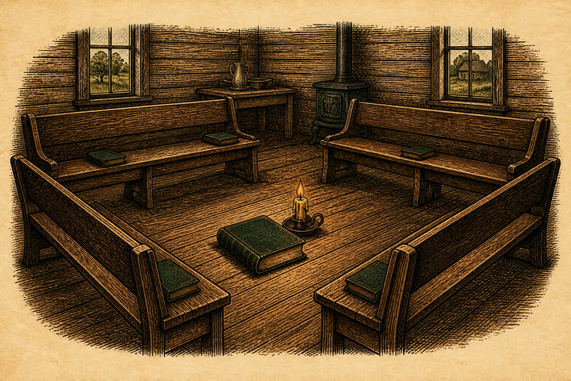

providence chapel · morning session
The class is waiting.

providence chapel · morning session

optional mode · no consequences
Learn the four patent shapes, hear short tenor openings, and repeat a phrase until the eye and ear agree. Nothing in this room follows you into the book.
The campaign keeps its silences. Practice examples stay here.
45t
Amazing grace! how sweet the sound, That saved a wretch like me!
When the class falls silent, choose the syllable you heard.
the closing